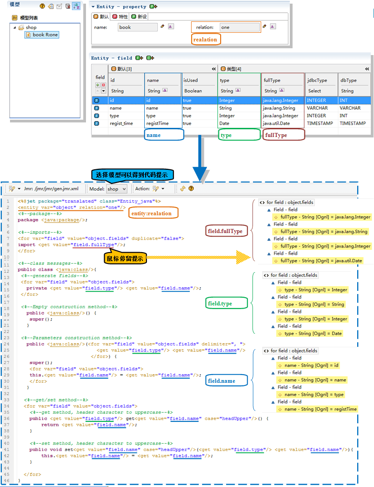

Jmr标签类似于Jsp标签。和Jsp、Asp一样，<%%>中的代码往往比较冗余，影响可读性。而使用标签后，不仅仅大大提高模板的可读性，同时也可以很好的实现前后台的分离。
Jmr标签最大的特点就是实现Ognl体系，可以方便的调用变量的属性和方法。
如下例子，先通过set标签设置一个String类型，再通过get标签可以得到它的全部属性和方法。
可以看到，通过标签，可以自由的操作对象的属性和方法，得到我们想要的值。
在Action中设置变量，传递到模板中使用。
如下例子，在Action中设置String、List变量，在模板中分别通过get标签和for标签遍历获取。
Jmr标签能够方便的得到模型的结构和信息。
